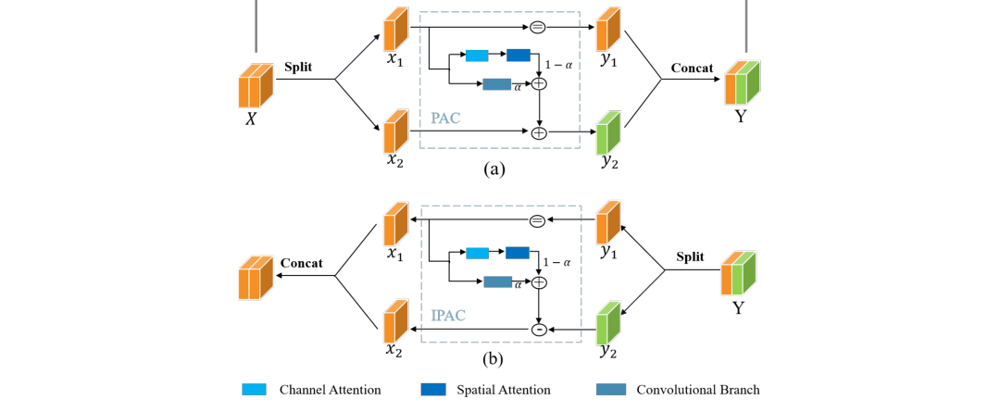

Core Contributions
InfoMinRev Module
Reversible flow blocks with PAC coupling. Mutual information minimization encourages compact features without losing content expressiveness.
Barlow Twins Loss
Channel-wise redundancy reduction via cross-correlation constraints, improving content structure preservation.
JSD Style Alignment
Jensen–Shannon divergence aligns style feature distributions to reduce over- and under-stylization.
Architecture
InfoMinRev module structure (forward and backward paths) with PAC/IPAC coupling.

Loss Design
Training objective combines content preservation, style distribution alignment, and redundancy reduction.
Content Loss
Normalized feature loss at VGG relu4_2 for structural preservation.
JSD Style Loss
Distribution alignment on feature mean and variance, with warmup for stable gradients.
Barlow Twins
Correlation matrix constraints reduce channel coupling without harming transferability.
NMI
KDE-based mutual information minimization between successive blocks.
Results
High-resolution qualitative examples.
Usage
Config-driven training and stylization. See README for full details.
python3 scripts/train.py --config configs/default.json
python3 scripts/stylize.py \
--config configs/default.json \
--checkpoint /path/to/checkpoint.pth \
--content /path/to/content \
--style /path/to/style \
--output /path/to/outputCitation
@inproceedings{infominrev,
title={Towards Compact Reversible Image Representations for Neural Style Transfer},
author={Liu, Xiyao and Yang, Siyu and Zhang, Jian and Schaefer, Gerald and Li, Jiya and Fan, Xunli and Wu, Songtao and Fang, Hui},
booktitle={ECCV},
year={2024}
}